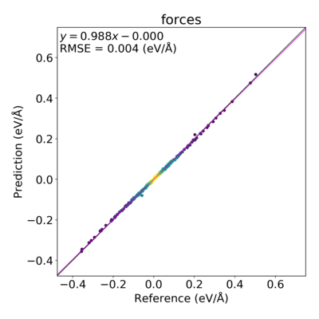

3.2. Lennard-Jones Potential for Argon¶
This example illustrates how to fit a Lennard-Jones potential. The systems are snapshots from a liquid Ar MD simulation. The forces and energies (the reference data) were calculated with dispersion-corrected DFTB.
Note
In this tutorial the training data has already been prepared. See how it was generated, or go to the Results Importer tutorial for how to import training data into params.
{kind=link}
Fig. 3.1 Left: One of the systems in the job collection. Right: predicted (with parametrized Lennard-Jones) forces compared to reference (dispersion-corrected DFTB) forces.
3.2.1. Lennard-Jones Parameters, Engine, and Interface¶
The Lennard-Jones potential has the form
where \(\epsilon\) and \(\sigma\) are parameters. The Lennard-Jones engine in AMS has the two parameters Eps (\(\epsilon\)) and RMin (distance at which the potential reaches a minimum), where \(\text{Rmin} = 2^{1/6}\sigma\).
In ParAMS, those two parameters can be optimized with the Lennard-Jones
parameter interface, which is used in this example. The
parameters then have the names eps and rmin (lowercase).
3.2.2. Files¶
Download LJ_Ar_example.zip, or make a copy of the directory $AMSHOME/scripting/scm/params/examples/LJ_Ar.
The directory contains four files that can be opened and edited in any text editor:
parameter_interface.yaml: A Parameter Interface containing the initial values and allowed ranges of theepsandrminparameters. See The parameter_interface.yaml file.job_collection.yaml: A set of jobs (a Job Collection) to be run during the parametrization. The structures are stored in this file. See: The job_collection.yaml filetraining_set.yaml: A Data Set containing reference values and expressions that extract results from the jobs. See The training_set.yaml file.params.conf.py: The main configuration file containing some settings for the optimization. See The params.conf.py file
LJ_Ar
├── job_collection.yaml
├── params.conf.py
└── training_set.yaml
3.2.3. Run the example¶
Start a terminal window as follows:
- Windows: In AMSjobs, select Help → Command-line, type
bashand hit Enter. - MacOS: In AMSjobs, select Help → Terminal.
- Linux : Open a terminal and
source /path/to/ams/amsbashrc.sh
In the terminal, go to the LJ_Ar directory, and run the ParAMS Main Script:
$AMSBIN/params optimize
which gives beginning output similar to this:
[2021-12-06 10:07:21] Reading ParAMS config ...
[2021-12-06 10:07:21] Loading job collection from job_collection.yaml ... [2021-12-06 10:07:21] done.
[2021-12-06 10:07:21] Loading data training set from training_set.yaml ... [2021-12-06 10:07:21] done.
[2021-12-06 10:07:21] Checking project for consistency ...
[2021-12-06 10:07:21] No issues found.
[2021-12-06 10:07:21] Starting parameter optimization. Dim = 2
[2021-12-06 10:07:21] Initial loss: 5.722e+02
[2021-12-06 10:07:21] New best training_set loss: 5.722e+02 at iteration 0
[2021-12-06 10:07:21] Step 000000 | training_set loss: 572.188673 | first 2 params: 0.000300 4.000000
[2021-12-06 10:07:21] New best training_set loss: 5.722e+02 at iteration 1
[2021-12-06 10:07:21] Step 000001 | training_set loss: 572.188673 | first 2 params: 0.000300 4.000000
[2021-12-06 10:07:21] New best training_set loss: 5.062e-01 at iteration 2
[2021-12-06 10:07:21] Step 000002 | training_set loss: 0.506209 | first 2 params: 6.47500000e-05 4.000000
[2021-12-06 10:07:22] New best training_set loss: 7.795e-02 at iteration 4
[2021-12-06 10:07:22] Step 000004 | training_set loss: 0.077947 | first 2 params: 6.47500000e-05 3.975000
[2021-12-06 10:07:22] Step 000010 | training_set loss: inf | first 2 params: 5.93750000e-06 3.990625
[2021-12-06 10:07:22] New best training_set loss: 6.769e-02 at iteration 19
[2021-12-06 10:07:22] Step 000019 | training_set loss: 0.067688 | first 2 params: 6.19931641e-05 3.986084
[2021-12-06 10:07:22] Step 000020 | training_set loss: 0.351541 | first 2 params: 6.93447266e-05 3.973193
[2021-12-06 10:07:22] New best training_set loss: 5.458e-02 at iteration 21
[2021-12-06 10:07:22] Step 000021 | training_set loss: 0.054580 | first 2 params: 6.03850098e-05 3.984216
[2021-12-06 10:07:23] New best training_set loss: 5.222e-02 at iteration 24
[2021-12-06 10:07:23] Step 000024 | training_set loss: 0.052219 | first 2 params: 6.04998779e-05 3.987921
[2021-12-06 10:07:23] New best training_set loss: 5.095e-02 at iteration 27
[2021-12-06 10:07:23] Step 000027 | training_set loss: 0.050946 | first 2 params: 6.11316528e-05 3.983298
[2021-12-06 10:07:23] New best training_set loss: 4.973e-02 at iteration 30
[2021-12-06 10:07:23] Step 000030 | training_set loss: 0.049733 | first 2 params: 6.26680145e-05 3.976600
[2021-12-06 10:07:23] New best training_set loss: 4.857e-02 at iteration 31
[2021-12-06 10:07:23] Step 000031 | training_set loss: 0.048568 | first 2 params: 6.37520828e-05 3.970939
[2021-12-06 10:07:23] New best training_set loss: 4.832e-02 at iteration 33
The starting parameters were eps=0.0003 and rmin=4.0 (as can be seen on the line starting with Step 000000). Every 10
iterations, or whenever the loss function decreases, the current value of the loss function is printed. The goal of the
parametrization is to minimize the loss function. It should take less than a
minute for the parametrization to finish.
You can plot the value of the loss function vs. the iteration number. Go to the optimization/training_set_results directory, and run
$AMSBIN/params plot running_loss.txt
{kind=link}
Fig. 3.2 Loss function (logscale) vs. iteration number. After about 100 iterations, the loss function value converges.
3.2.4. The best parameter values¶
The best (optimized) parameters are stored in optimization/training_set_results/best/lj_parameters.txt (or optimization/training_set_results/best/parameter_interface.yaml):
Engine LennardJones
Eps 0.00019604583935927278
RMin 3.653807860077536
EndEngine
See also: Detailed results: correlation plots, summary statistics
3.2.5. Input files¶
3.2.5.1. The parameter_interface.yaml file¶
The parameter_interface.yaml file is a Parameter Interface of type LennardJonesParameters. It contains the following:
1 2 3 4 5 6 7 8 9 10 11 12 13 14 15 16 17 18 19 20 21 22 23 | ---
dtype: LennardJonesParameters
settings:
input:
lennardjones: {}
version: 0.5.1
---
name: eps
value: 0.0003
range:
- 1.0e-05
- 0.01
is_active: true
atoms: []
---
name: rmin
value: 4.0
range:
- 1.0
- 8.0
is_active: true
atoms: []
...
|
All the parameters in a
parameter interface have names. For Lennard-Jones, there are only two
parameters: eps and rmin.
Every parameter needs an initial value and an allowed range of values.
Above, the initial value for eps is set to 0.0003, and the allowed range to between 1e-5 and 0.01.
This means that the eps variable will only be varied between \(10^{-5}\) and \(10^{-2}\)
during the parametrization.
Similarly, the initial value for rmin is set to 4.0, and the allowed range is between 1.0 and 8.0.
The is_active attribute of the parameters is set to True, meaning that they will be optimized.
For details about the header of the file (lines 2-6), see the parameter interface documentation.
3.2.5.2. The job_collection.yaml file¶
The job_collection.yaml file is a Job Collection. It contains entries like these:
1 2 3 4 5 6 7 8 9 10 11 12 13 14 15 16 17 18 19 20 21 22 23 24 25 26 27 28 29 30 31 32 33 34 35 36 37 38 39 40 41 42 43 44 45 46 47 48 49 50 | ---
dtype: JobCollection
version: 0.5.1
---
ID: 'Ar32_frame001'
ReferenceEngineID: None
AMSInput: |
properties
gradients Yes
End
system
Atoms
Ar 5.1883477539 -0.4887475488 7.9660568076
Ar 5.7991822399 0.4024595652 2.5103286966
Ar 6.1338265157 5.5335946219 7.0874208384
Ar 4.6137188191 5.9644505949 3.0942810122
Ar 8.4186778390 7.6292969115 8.0729664423
Ar 8.3937816110 8.6402371806 2.6057806799
Ar 7.5320205143 1.7666481606 7.7525889818
Ar 8.5630139885 2.0472039529 2.6380554086
Ar 2.6892353632 7.8435284207 7.7883054306
Ar 2.4061636915 7.5716025415 2.4535180075
Ar 2.2485171283 2.9764130946 7.8589298904
Ar 3.0711058946 1.8500587164 2.5620921469
Ar 7.6655637500 -0.4865893003 0.0018797080
Ar 7.7550067215 -0.0222821825 4.8528637785
Ar 7.7157262425 4.6625079517 -0.3861722152
Ar 7.7434900996 5.2619590353 4.2602386226
Ar 3.4302237084 -0.2708640738 0.6280466620
Ar 2.8648051689 0.6106220610 6.1208342905
Ar 3.2529823775 5.7151788324 -0.2024448179
Ar 2.0046357208 4.9353027402 5.4968740217
Ar 0.9326855213 8.0600564695 -0.3181225099
Ar -0.5654205469 8.5703446434 5.8930973456
Ar -0.9561293133 2.1098403312 -0.0052667919
Ar -0.8081417664 3.2747992855 5.5295389610
Ar 5.5571960244 7.5645919074 0.1312355350
Ar 4.4530832384 7.6170633330 5.4810860433
Ar 5.1235367625 2.7983577675 -0.3161069611
Ar 5.2048439076 2.9885672135 4.5193274119
Ar -0.2535891591 0.0134355189 8.3061692970
Ar 0.5614183785 -0.1927751317 3.2355155467
Ar -0.0234943080 5.0313863031 8.0451075074
Ar -0.4760138873 6.2617510830 2.5759742219
End
Lattice
10.5200000000 0.0000000000 0.0000000000
0.0000000000 10.5200000000 0.0000000000
0.0000000000 0.0000000000 10.5200000000
End
|
Each job collection entry has an ID (above Ar32_frame001) and some
input to AMS, in particular the structure (atomic species, coordinates, and
lattice). Each entry in the job collection constitutes a job that is
run for every iteration during the parametrization.
What to extract from the jobs is defined in The training_set.yaml file.
3.2.5.3. The training_set.yaml file¶
The training_set.yaml file is a Data Set.
It contains entries like these:
1 2 3 4 5 6 7 8 9 10 11 12 13 14 15 16 17 18 19 20 21 22 23 24 25 26 27 28 29 30 31 32 33 34 35 36 37 38 39 40 41 42 43 44 45 46 47 48 49 50 51 52 53 54 | ---
dtype: DataSet
version: 0.5.1
---
Expression: energy('Ar32_frame001')-energy('Ar32_frame002')
Weight: 1.0
Sigma: 0.054422772491975996
ReferenceValue: 0.20395942701715317
Unit: eV, 27.211386245988
---
Expression: energy('Ar32_frame003')-energy('Ar32_frame002')
Weight: 1.0
Sigma: 0.054422772491975996
ReferenceValue: 0.22060005304153482
Unit: eV, 27.211386245988
---
Expression: forces('Ar32_frame001')
Weight: 1.0
Sigma: 0.15426620242897765
ReferenceValue: |
array([[ 0.04268692, -0.02783233, 0.04128417],
[ 0.02713834, -0.04221017, -0.01054571],
[-0.00459236, -0.07684888, 0.06155902],
[ 0.34815492, -0.38436427, -0.12292068],
[-0.20951048, -0.09704763, 0.30684271],
[-0.12165704, 0.02841069, -0.03455513],
[-0.01065992, 0.04707562, -0.00797079],
[-0.09806036, 0.06893426, 0.29291125],
[-0.08117544, 0.00197622, 0.05092921],
[-0.26343319, 0.26285542, -0.02473382],
[ 0.06144345, -0.01781664, 0.17121465],
[-0.16915463, 0.24386843, 0.13151148],
[-0.01651514, 0.03927323, -0.12482729],
[-0.05972447, 0.09258089, 0.23253252],
[ 0.00554623, 0.0802643 , 0.00565681],
[-0.14037904, 0.02969844, 0.01099823],
[-0.03492464, -0.20821058, -0.25464835],
[-0.01710259, -0.10689741, -0.13469458],
[-0.12217555, -0.15624485, -0.02885505],
[ 0.04492738, 0.08596881, -0.11475184],
[-0.15375715, 0.02301999, 0.09411744],
[ 0.26855338, 0.0068943 , -0.31912743],
[ 0.19519975, 0.05424052, -0.29197409],
[ 0.03589698, -0.11822402, 0.00851084],
[ 0.12697447, 0.08277883, 0.01592771],
[ 0.10473145, 0.18847622, -0.03627933],
[-0.03520977, -0.03814586, 0.0023055 ],
[ 0.05408552, 0.02290898, 0.08376102],
[ 0.06093887, 0.00964534, -0.01148707],
[ 0.02291482, 0.01746282, 0.00389746],
[-0.07331299, 0.09730838, 0.08506009],
[ 0.21215231, -0.20979905, -0.08164896]])
Unit: eV/angstrom, 51.422067476325886
---
|
The first entry has the Expression
Expression: energy('Ar32_frame001')-energy('Ar32_frame002')
which means that for every iteration during the parametrization, the current Lennard-Jones parameters will be used to calculate the quantity the energy of the job Ar32_frame001 minus the energy of the job Ar32_frame002. The number should ideally be as close as possible to the ReferenceValue, which above is given as 0.204 eV. The greater the deviation from the reference value, the more this entry will contribute to the loss function.
The Weight and Sigma also affect how much the entry contributes to the loss function. For details, see Data Set and Sigma vs. weight: What is the difference?.
Note
The Sigma in training_set.yaml is not the \(\sigma\) that appears in the Lennard-Jones equation.
Reference data can be expressed in any Unit. The Unit for the first expression
is given as eV, 27.21138. The number specifies a conversion factor from the
default unit Ha. If no Unit is given, the data must
be given in the default unit.
Many different quantities can be extracted from a job. The third entry (starting on line 17) has the Expression
Expression: forces('Ar32_frame001')
which extracts the atomic forces (32 × 3 force components) from the job
Ar32_frame001. The reference value for the force components are given as a matrix
in eV/angstrom (as specified by the Unit).
3.2.5.4. The params.conf.py file¶
The params.conf.py file contains
1 2 3 4 5 6 7 8 9 10 11 12 13 14 | ### The training_set, job_collection, and parameter_interface variables contain paths to the corresponding .yaml files
training_set = 'training_set.yaml'
job_collection = 'job_collection.yaml'
parameter_interface = 'parameter_interface.yaml'
### Define an optimizer for the optimization task. Use either a CMAOptimizer or Scipy
#optimizer = CMAOptimizer(sigma=0.1, popsize=10, minsigma=5e-4)
optimizer = Scipy(method='Nelder-Mead') # Nelder-Mead
### run the optimization in serial
parallel = ParallelLevels(parametervectors=1, jobs=1)
### Stop the optimization after 2 minutes if it has not finished with the timeout variable.
timeout = 120
|
Variables: The training_set, job_collection, parameter_interface, optimizer, loss, parallel, and
timeout variables are interpreted by the ParAMS Main Script (the
$AMSBIN/params optimize command).
Optimizer: The optimizer variable is an Optimizer.
For simple optimization problems like Lennard-Jones, the Nelder-Mead method
from scipy can be used. For more complicated problems, like ReaxFF
optimization, a more advanced optimizer like the CMAOptimizer is
recommended.
Loss function: The loss variable specifies the loss function to be minimized.
Parallellization: The parallel variable is a ParallelLevels, specifying how to parallelize the parameter optimization.
Set it to None to use a good default for your machine.
3.2.5.5. Creation of the input files¶
The params.conf.py file is a modified version of the standard params.conf.py file that can be generated with this command:
$AMSBIN/params makeconf
The parameter_interface.yaml, job_collection.yaml, training_set.yaml files were created with a
script combining functionality from PLAMS and
ParAMS. Download the script if you would like to try it. It sets
up a molecular dynamics simulation of liquid Ar with the UFF force field. Some
snapshots are recalculated with dispersion-corrected DFTB (GFN1-xTB). A
ResultsImporter then extracts the forces and relative energies, and
creates the job_collection.yaml and training_set.yaml files.
3.2.6. Output files¶
The results from the optimization are stored in the optimization directory:
.
└── optimization
├── settings_and_initial_data
│ └── data_sets
└── training_set_results
├── best
│ ├── pes_predictions
│ └── scatter_plots
├── history
│ ├── 000000
│ │ ├── pes_predictions
│ │ └── scatter_plots
│ └── 000144
│ ├── pes_predictions
│ └── scatter_plots
├── initial
│ ├── pes_predictions
│ └── scatter_plots
└── latest
├── pes_predictions
└── scatter_plots
- The settings_and_initial_data directory contains compressed versions of the job collection, training set, and parameter interface.
- The training_set_results directory contains detailed results for the training set.
The training_set_results directory contains the following subdirectories:
- The best subdirectory contains detailed results for the iteration with the lowest loss function value
- The history subdirectory contains detailed results that are stored regularly during the optimization (by default every 500 iterations).
- The initial subdirectory contains detailed results for the first iteration (with the initial parameters).
- The latest subdirectory contains detailed results for the latest iteration.
3.2.6.1. summary.txt¶
The optimization/summary.txt file contains a summary of the job collection, training set, and settings:
Optimization() Instance Settings:
=================================
Workdir: LJ_Ar/optimization/optimization
JobCollection size: 3
Interface: LennardJonesParameters
Active parameters: 2
Optimizer: Scipy
Parallelism: ParallelLevels(optimizations=1, parametervectors=1, jobs=1, processes=1, threads=1)
Verbose: True
Callbacks: Logger
Timeout
Stopfile
PLAMS workdir path: /tmp
Evaluators:
-----------
Name: training_set (_LossEvaluator)
Loss: SSE
Evaluation frequency: 1
Data Set entries: 5
Data Set jobs: 3
Batch size: None
Use PIPE: True
---
===
Start time: 2021-12-06 10:07:21.681185
End time: 2021-12-06 10:07:32.125530
3.2.6.2. Detailed results: correlation plots, summary statistics¶
Go to the
optimization/training_set_results/best/scatter_plots directory, and run
$AMSBIN/params plot forces.txt
This creates a correlation plot between the predicted forces and reference forces:
{kind=link}
You can also open the forces.txt or energy.txt
in a text editor, or import them into a spreadsheet (Excel). For example, the
latter file contains
#Reference Prediction Unit Sigma Weight WSE* Row* Col* Expression
#------------------------------------------------------------------------------------------------------------------------
+0.204 +0.204 eV 0.054 1.0000 0.000 0 0 energy('Ar32_frame001')-energy('Ar32_frame002')
+0.221 +0.221 eV 0.054 1.0000 0.000 0 0 energy('Ar32_frame003')-energy('Ar32_frame002')
#------------------------------------------------------------------------------------------------------------------------
#WSE*: Weighted Squared Error: weight*([reference-prediction]/sigma)**2
#Row*, Col*: For scalars both numbers are 0. For 1D arrays Col is 0.
This shows a good agreement between the predicted and reference values for the relative energies in the training set.
You can also see some summary statistics in the file stats.txt:
Group/Expression N MAE RMSE* Unit* Weight Loss* Contribution[%]
-----------------------------------------------------------------------------------------------------------------------------
Total 290 0.00318 +0.00443 Mixed! 5.000 0.003 100.00 Total
forces 288 0.00320 +0.00444 eV/angstrom 3.000 0.002 99.03 Extractor
Ar32_frame003 96 0.00367 +0.00538 eV/angstrom 1.000 0.001 48.34 Expression
Ar32_frame001 96 0.00312 +0.00404 eV/angstrom 1.000 0.001 27.31 Expression
Ar32_frame002 96 0.00282 +0.00374 eV/angstrom 1.000 0.001 23.38 Expression
energy 2 0.00018 +0.00019 eV 2.000 0.000 0.97 Extractor
Ar32_frame003-Ar32_frame002 1 0.00024 -0.00024 eV 1.000 0.000 0.80 Expression
Ar32_frame001-Ar32_frame002 1 0.00011 -0.00011 eV 1.000 0.000 0.16 Expression
-----------------------------------------------------------------------------------------------------------------------------
The weighted total loss function is 0.003.
N: number of numbers averaged for the MAE/RMSE
MAE and RMSE: These are not weighted!
RMSE*: if N == 1 the signed residual (reference-prediction) is given instead of the RMSE.
Unit*: if the unit is "Mixed!" it means that the MAE and RMSE are meaningless.
Loss function type: SSE(). The loss function value is affected by the Weight and Sigma of data_set entries.
Contribution[%]: The contribution to the weighted loss function.
This file gives the mean absolute error (MAE) and root-mean-squared error (RMSE) per entry in the training set. You can also see the contribution to the loss function value. For example, 99% of the loss function value comes from errors in the forces, and only 1% from errors in the relative energies.
Other files:
active_parameters.txtcontains a list of the parameter values.data_set_predictions.yamlis a yaml file storing the training set with both the reference values and predicted values. The file can be loaded in Python (with a Data Set Evaluator) to regenerate (modified version of)stats.txt,scatter_plots/energy.txt, etc.evaluation.txtcontains the evaluation (step) number.loss.txtcontains the loss function value.lj_parameters.txtcontains the optimized parameters in a format that can be read by AMS.parameter_interface.yamlcontains the optimized parameters in a format that can be read by ParAMS.pes_predictions/is a directory containing detailed results for thepesextractor (for example bond scans, angle scans, or volume scans). It is empty in this tutorial.